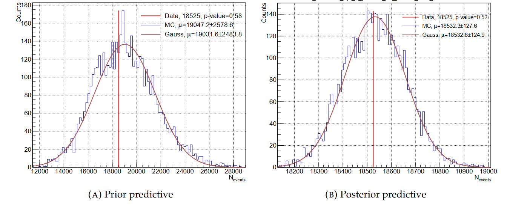
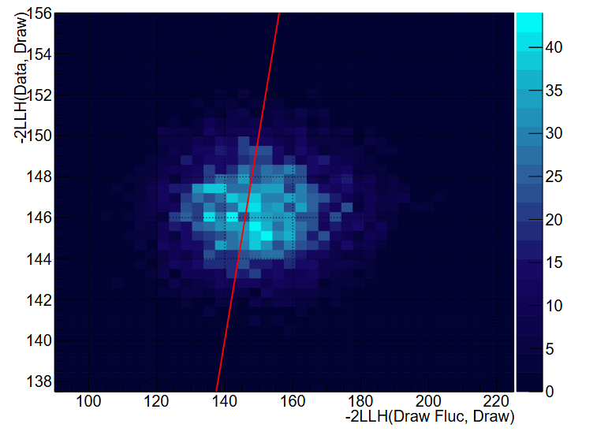

Posterior Predictive#
Prior and Posterior Predictive Distributions#
We consider the predictive distributions of the number of events \(Z\). The prior predictive distribution of \(Z\) is given by:
where \(p(\vec{\theta})\) is the same prior probability as in Bayes’ theorem. We use the following procedure to obtain the prior predictive distribution:
Throw values of the parameters using their prior distributions.
Reweight MC to the selected parameters values. Reweighted MC is usually called a toy MC.
From multiple toy MCs, we obtain the mean value of the number of events (Z).
After the fit, we can predict the observable \(Z_{\mathrm{pred}}\), which estimates the expected measurement of the same physical process as \(Z\). This is known as the posterior predictive distribution \(p(Z_{\mathrm{pred}} \mid Z)\) (see Bayesian analysis):
where \(p(\vec{\theta} \mid Z)\) is the posterior probability. We obtain the posterior predictive distribution with the following steps:
Sample the posterior probability distribution by randomly selecting steps, to get \(\vec{\theta}\) associated with the selected step.
Reweight MC to the selected parameters values.
From multiple toy MCs, we obtain the mean value of the number of events \(Z_{\mathrm{pred}}\).
Figure shows the prior and posterior predictive distributions of the number of events. The prior predictive distribution is very wide compared to the posterior predictive distribution, and the relative error on the number of events for this sample has been reduced from 14% to 0.7%, which demonstrates how fit can reduce uncertainties.

This technique is visualised in following animation:
Posterior Predictive p-value#
Bayesian posterior predictive \(p\)-value is meant to estimate how likely we are to observe the data described by our postfit model if we were to take the same amount of data again. Therefore, it is a much more demanding \(p\)-value test than the frequentist \(p\)-value, which uses the larger prior parameter phase space.
Firstly, an ensemble of parameter values explored by the MCMC, once the stationary state has been reached, is used. We draw parameter values from a random MCMC step after the burn-in stage and build the predictions for each sample (by reweighting the nominal MC to the drawn parameter values). Then, we statistically fluctuate the drawn prediction by applying Poissonian smearing to each bin. Afterwards, for each sample, we calculate -2LLH between the drawn prediction and its statistical fluctuation: -LLH(Draw Fluc, Draw), and similarly between the drawn prediction and the data distribution: -LLH(Data, Draw). We repeat this process a few thousand times. An example of -LLH(Data, Draw) vs. -2LLH(Draw Fluc, Draw) is shown below.

We identify two methods for calculating the \(p\)-value, statistically fluctuating two different distributions. The first method uses the prediction from the draw -LLH(Draw Fluc, Draw), and the other uses the averaged prediction for all draws and its statistical fluctuation -LLH(Pred Fluc, Draw). On average, we expect the \(p\)-value from the second method to be better.
The p-value is the ratio of number of draws below the y = x line to all considered draws.
Further reading#
Kamil Skwarczynski’s PhD thesis.